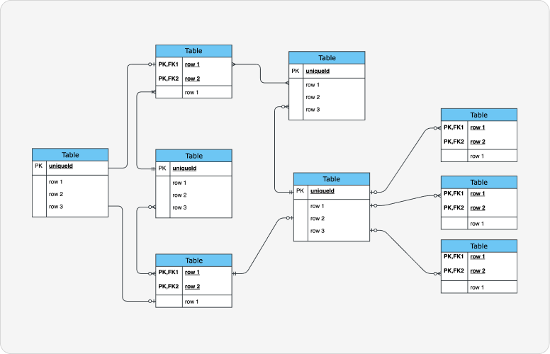

Tagasi
ERD (Entity Relationship Diagram)
ERD diagramm on visuaalne andmemudeli skeem, mis kirjeldab olemid (tabeleid),
nende atribuute ja omavahelisi seoseid. ERD-id aitavad planeerida relatsioonandmebaasi
struktuuri juba enne andmebaasi loomist.
Kus kasutatakse?
- Andmebaaside planeerimisel
- Süsteemide andmemudelite loomisel
Ühenduselemendid
- 1 : 1 – üks ühele
- 1 : N – üks mitmele
- M : N – mitu mitmele
Olemitabel
- Olemi nimi
- Atribuudid
- Võtmed
Võtmed
- Primary Key – unikaalne identifikaator
- Foreign Key – viide teise tabeli Primary Keyle
- Composite Key – mitmest väljast koosnev võti
- Key – üldine identifikaator
ERD näidis

Viited